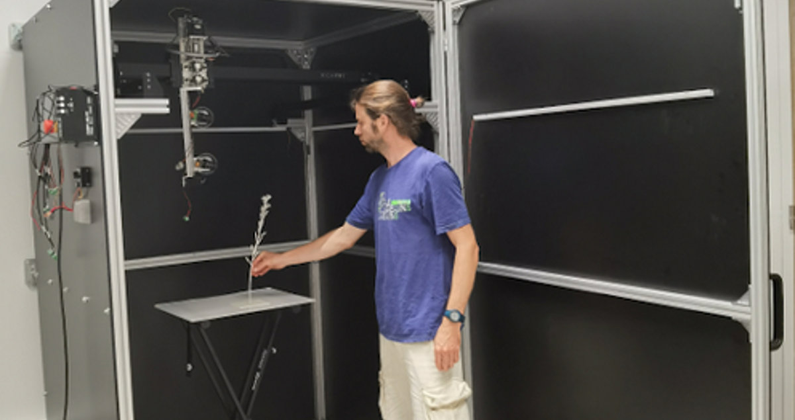
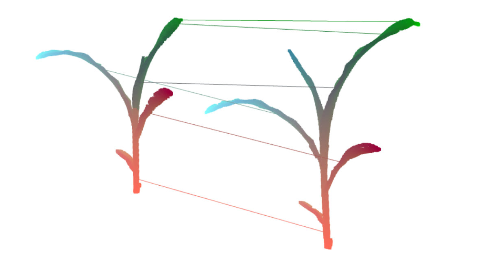
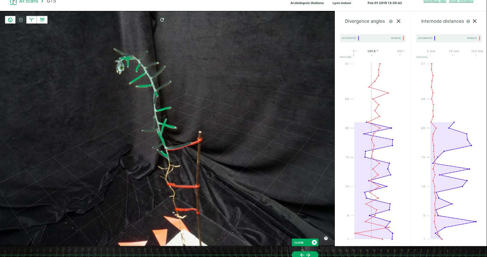
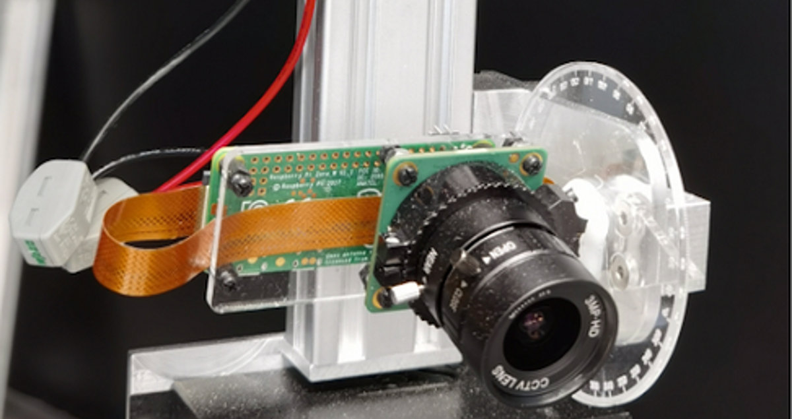

The ROMI project develops a 3D plant phenotyping
platform adapted to single potted plants. The Plant
Imager is being finalized in controlled indoor settings
for a future use in research laboratories. However, its
use in controlled farming environments, such as
greenhouses, is envisioned as a mid-term application.

The interpreter currently detects plant constituent organs
and this detailed spatial data is available for further
analysis.

The package consists of several modules, including:
- the Plant Imager: the physical hardware
- the Virtual Plant Imager: to collect images of 3D plant models
- the Plant 3D Vision: our library to analyse the data
- the Plant 3D Explorer: to inspect the results online

The analysis pipeline uses both geometrical algorithms
and Machine Learning techniques. It is developed in
collaboration with the research
on plant modeling and AI.